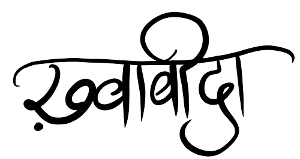

...of love and farts.
“I tell you, we are here on Earth to fart around,
and don't let anybody tell you different.”
― Kurt Vonnegut, A Man Without a Country
L: ...that's it, the world, it's purely based on cosmic connections.
G: How is it that you live with so much content in your heart? You're talking as if
it's a crime, a sin, dreadful!
L: Can be dreadful yes. It's another one of the inventions of course.
G: They're all dreadful, aren't they?
L: The inventors. Yes, oh! The most dreadful of all inventors? Oh! The linguists! Oh!
The linguists! They do not feel a thing I tell you, these linguists! All words
no feel. Tragic low beings. We were just meant to express sounds I am telling
you. Just ‘ohs’, ‘Ahs’ and ‘Uhs’. What more do you need? The love of your life
the twinkle of your eye farts and you say “Ah.”. The old brute that ticks your
brain farts and you say “Oh!”. And the rest is all emotion. Can you not tell
the emotional gap between the “Ah.” and the “Oh!”? It's that simple. But
these dreaded linguists!
G: ...What about biology?
L: Biology? What? The hum drum of what goes where?
G: What goes where?
L: Ah! No! You said it wrong! It's a harmony!
G: A bunch of tissues all working in harmony to sustain such tragic beings? I don't
think so...
L: ...Oh, it's all just what goes where. The phallic connections yes! The art of
having one's vagina holding another's penis? Of a vagina rubbing against another? Of a butt clenching?
G: No! No! rubbish. Why such a Freud? It's all just the intimate act of farting.
L: All farts no love. What's love and is it any better than a fart?
G: Fool! Oh, what a fool! That's content! Fart! Oh! Fool!
“I fart more than I fuck.
And I fart better than I fuck.”
-Charles Bukowsky, Farting Is Much Like Fucking